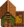

Gallina sombría
| Gallina sombría | |
| Una gallina adulta bien cuidada pone huevos todos los días. Viven en el corral. | |
| Información | |
| Edificio |  Corral |
| Precio de compra | n/d |
| Produce | |
La Gallina sombría es un animal de granja que vive en un Corral grande. Las gallinas sombrías se pueden incubar colocando un Huevo sombrío en una Incubadora, tomando  9,000m (5d 16h 40m) para incubarse completamente, o
9,000m (5d 16h 40m) para incubarse completamente, o  4,500m (2d 21h 40m) con la profesión de Corralero.
4,500m (2d 21h 40m) con la profesión de Corralero.
Producción
- Articulo principal: Animales
Las gallinas sombrías que comen todos los días maduran después de 3 noches. Una gallina sombría adulta y alimentada produce un Huevo sombrío cada día, que puede colocarse en una Incubadora para incubar otra gallina sombría, o venderse por  65o. El Huevo sombrío puede utilizarse en recetas de cocina que requieran un huevo.
65o. El Huevo sombrío puede utilizarse en recetas de cocina que requieran un huevo.
Se puede colocar un Huevo sombrío en la Mayonesera para producir Mayonesa sombría, que se vende por  275o.
275o.
| Imagen | Nombre | Descripción | Precio de venta | ||||||||
|---|---|---|---|---|---|---|---|---|---|---|---|
| Huevo sombrío | Un huevo negro azabache con motitas rojas. Cálido al tacto. |
|
Venta
Las Gallinas sombrías pueden venderse de la misma manera que las Gallinas normales. Cuantos más corazones tenga el animal, mayor será su precio de venta. Una gallina sombría recién nacida se vende por  252o, y una gallina sombría con el máximo de corazones se vende por
252o, y una gallina sombría con el máximo de corazones se vende por  1040o, lo mismo que para las gallinas normales.
1040o, lo mismo que para las gallinas normales.
| Animales y Productos | |
|---|---|
| Corral | Conejo (Lana • Pata de conejo) • Dinosaurio (Huevo de dinosaurio) • Gallina (Huevo • Huevo XXL • Huevo Marrón • Huevo Marrón XXL) • Gallina dorada (Huevo dorado)• Gallina sombría (Huevo sombrío) • Pato (Huevo de pato • Pluma de pato) |
| Establo | Avestruz (Huevo de avestruz) • Cabra (Leche de cabra • Leche de cabra XXL) • Cerdo (Trufa) • Oveja (Lana) • Vaca (Leche • Leche XXL) |
| Estanque de peces | Pescados (Huevas) |
| Criadero de babas | Babas (Baba • Bola de baba • Huevo de baba) |
| Otros | Caballo • Gato • Perro |